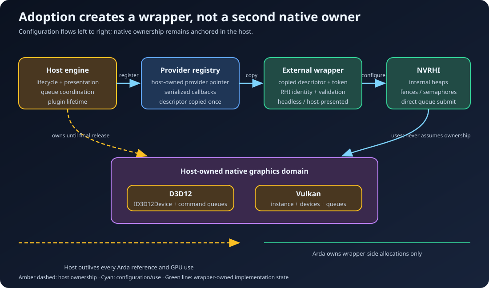
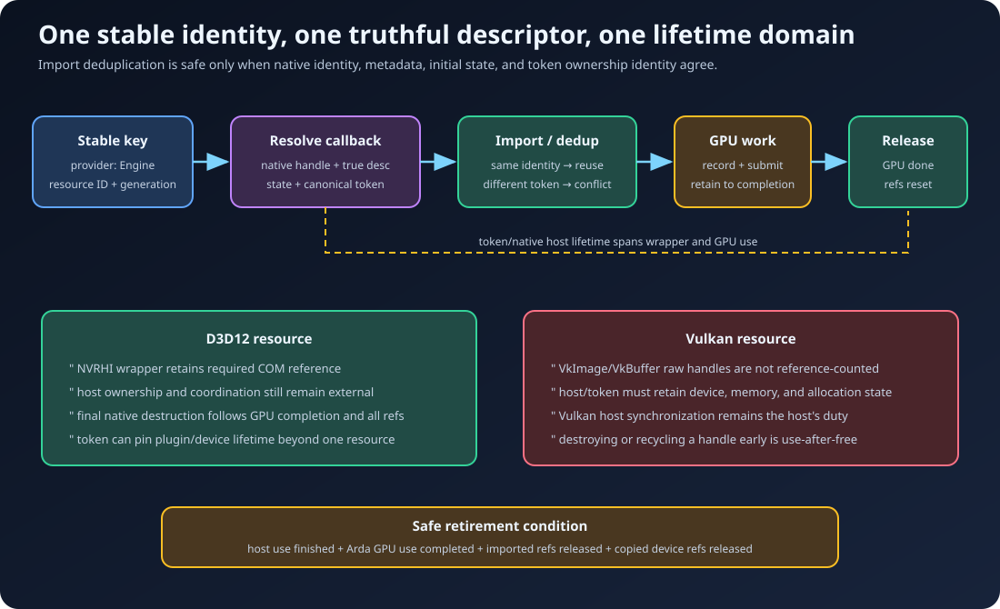
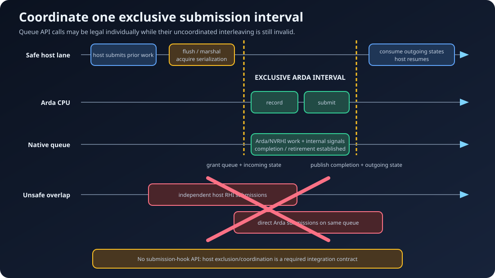

Adopt host-owned devices without surrendering ownership
External devices and resources
External interop lets an engine keep authority over its native device, queues, presentation, and resource catalog while the selected backend module creates Arda's RHI facade over selected objects. The checked-in native D3D12 module demonstrates device adoption; generic descriptors also support custom native and engine-RHI modules. The boundary remains deliberately narrow: ownership is explicit, queue access is coordinated, and native descriptions must be truthful.
Learning objectives
After this chapter, you should be able to:
- separate native ownership from RHI wrapper ownership and GPU-use lifetime;
- route one universal host-owned device descriptor to an exact module, including the checked-in native D3D12 module;
- register providers without introducing callback reentrancy or registry-lifetime races;
- resolve stable resource IDs into truthful texture and buffer import descriptions;
- coordinate exclusive queue intervals with an engine submission thread;
- keep Vulkan raw handles and D3D12 COM objects alive through every copied Arda reference and in-flight use; and
- integrate host-managed acquisition and presentation without calling Arda's swap-chain initializer.
Prerequisites and scope
Read Architecture, Getting started, RHI resources, and Commands. Review ownership, lifetime token, native import, and queue coordination.
Fundamentals: three independent contracts
Interop is correct only when three contracts agree:
- Identity: every wrapper refers to a native object created by the adopted device, and repeated imports of one handle describe the same object.
- Lifetime: native objects, plugin state, callback providers, wrappers, and GPU work remain valid in their required order.
- Execution: the host and Arda never submit unsynchronized work concurrently to the same native queue, and resource state handoffs describe reality.
A wrapper is not a second native device. It is a second programming interface over the host device. The selected module may allocate descriptor storage, internal heaps, fences, semaphores, command allocators, or engine-RHI objects, and it may submit directly to supplied queues. The host still owns the external device and decides when Arda receives a coordinated queue interval.

Exact project mapping
EArdaDeviceSource selects between module-created native state and a registered external provider. Set FArdaBackendConfiguration::mDeviceSource to the external-provider enumerator and choose the matching module name or compatibility class before calling the headless InitializeBackend.
The process-wide IArdaExternalDeviceProvider supplies one copied universal FArdaExternalDeviceDesc and an optional shared token. GetBackendName can require one exact module; named objects, repeated named properties, and backend bytes are interpreted only by that module. No native API declaration appears in the public ArdaBackend API. After initialization, FArdaDeviceContext::mBackendName and mDeviceSource report which implementation and source produced the live wrapper.
Named IArdaExternalResourceProvider objects form a separate registry. They turn a provider name and stable 64-bit ID into complete native import descriptions consumed by ImportExternalTexture or ImportExternalBuffer.
D3D12 device adoption
TESTED API PATH Focused backend tests exercise the D3D12 external-provider path. The host supplies one required ID3D12Device* and required graphics ID3D12CommandQueue*. Compute and copy queues are optional; absent queues are reported as unavailable capabilities. The optional factory does not enable presentation on the current external wrapper.
The native D3D12 module retains COM references needed by its wrapper, but this never transfers host ownership to Arda. The host must still preserve device/plugin invariants and must not release or invalidate native state while any Arda wrapper or GPU submission can use it.
class D3D12Provider final : public arda::backend::IArdaExternalDeviceProvider
{
public:
D3D12Provider(ID3D12Device* device,
ID3D12CommandQueue* graphics,
eastl::shared_ptr<void> hostLifetime)
: mLifetime(eastl::move(hostLifetime))
{
mDesc.mNativeApi = "d3d12";
mDesc.mDevice = arda::backend::FArdaNativeObject(device);
mDesc.mQueues.push_back({
arda::rhi::EArdaRHIQueueType::Graphics,
arda::backend::FArdaNativeObject(graphics) });
}
arda::backend::EArdaBackendType GetBackendType() const noexcept override
{
return arda::backend::EArdaBackendType::D3D12;
}
bool GetExternalDeviceDesc(
arda::backend::FArdaExternalDeviceDesc& out) const override
{
out = mDesc;
return true;
}
eastl::shared_ptr<void> GetLifetimeToken() const override { return mLifetime; }
private:
arda::backend::FArdaExternalDeviceDesc mDesc;
eastl::shared_ptr<void> mLifetime;
};The native D3D12 module requires an ID3D12Device and a direct graphics ID3D12CommandQueue. Other modules may define an additional property vocabulary; applications must not assume module-specific names are portable.
Vulkan device adoption for custom modules
NOT IMPLEMENTED BY NATIVE-VULKAN The provider contract can describe a live instance, physical device, logical device, queues, families, and enabled extensions, but the checked-in native-vulkan module currently creates and owns its device and rejects external-device mode. The following schema is guidance for a custom Vulkan or engine module, not a supported path in the checked-in provider.
The physical/logical device contract is Vulkan 1.3 or newer with dynamic rendering, synchronization2, and timeline semaphore features enabled. Initialization can query physical-device support, but Vulkan cannot retrospectively report which feature bits the host enabled when it created VkDevice. The properties are therefore host assertions: report enabled state, not adapter support alone.
arda::backend::FArdaExternalDeviceDesc d;
d.mBackendName = "custom-vulkan";
d.mNativeApi = "vulkan";
d.mInstance = arda::backend::FArdaNativeObject(vkInstance);
d.mAdapter = arda::backend::FArdaNativeObject(vkPhysicalDevice);
d.mDevice = arda::backend::FArdaNativeObject(vkDevice);
d.mQueues.push_back({ arda::rhi::EArdaRHIQueueType::Graphics,
arda::backend::FArdaNativeObject(vkGraphicsQueue), graphicsFamily, graphicsIndex });
for (const char* name : enabledInstanceExtensions)
d.mProperties.push_back({ "instance-extension", name });
for (const char* name : enabledDeviceExtensions)
d.mProperties.push_back({ "device-extension", name });
d.mProperties.push_back({ "buffer-device-address", "true" });Vulkan handles are not reference-counted. Arda never destroys the supplied Vulkan instance, devices, queues, or allocation callbacks. The host and optional token must keep every raw handle, enabled-extension contract, allocation-callback object, loader contract, and queue valid through every copied Arda device/resource reference and all GPU work.
Provider registration and collision behavior
Call RegisterExternalDeviceProvider before initialization. Re-registering the same object is idempotent. A different device provider, or any registration attempt after initialization, is rejected. After shutdown, call UnregisterExternalDeviceProvider with the exact object before destroying it. GetExternalDeviceProvider returns only a non-owning pointer.
Device descriptors are copied during initialization. Strings and extension-name arrays therefore do not need to remain provider-owned afterward, but copied native handles remain non-owning. Provider callbacks execute while the registry lock is held: keep them bounded, deterministic, and non-reentrant. They must not call backend registration, unregistration, initialization, shutdown, or other lifetime APIs.
Named resource providers
A resource provider has a stable non-empty name, declares one backend, and resolves IDs to complete texture or buffer import descriptions. Register it with RegisterExternalResourceProvider. The same object/name registration is idempotent; another object using that name is a collision and records a backend error. Lookup through GetExternalResourceProvider is non-owning. Remove the exact object with UnregisterExternalResourceProvider.
Resolution callbacks also run under the registry lock and must not reenter the registry. A resolved FArdaRHINativeTextureImportDesc or FArdaRHINativeBufferImportDesc must truthfully describe native type, handle, ownership, dimensions or byte size, format/stride, permitted usage, and actual initial state. Use D3D12Resource for either D3D12 texture or buffer resources, VulkanImage for VkImage, and VulkanBuffer for VkBuffer. Import cannot discover or repair false metadata.

Lifetime-token semantics
FArdaRHINativeTextureImportDesc::mLifetimeToken and FArdaRHINativeBufferImportDesc::mLifetimeToken are optional shared tokens retained by the imported wrapper. The token does not make a handle valid by itself; its deleter/owned object must actually retain the host subsystem that guarantees validity.
Imported-resource cache identity includes shared ownership identity. Reusing the same native handle with an equivalent description and the same token deduplicates; resolving that handle with a different token is a conflict, even if both tokens happen to keep the same engine object alive. Keep one canonical token per native lifetime domain.
ShutdownBackend waits for idle and clears the process context, but copied FArdaRHIDeviceRef values can keep the external wrapper alive. Imported resource references can likewise retain wrapper-side state and tokens. The host must release all copied Arda device and resource references before destroying the native device, Vulkan loader/allocation state, or plugin module.
Queue synchronization and threading
There is no submission-hook integration API. Calling Arda submission methods while an independent host RHI thread can submit to the same queue is unsafe, even when each individual API call is legal. Queue objects require host synchronization on Vulkan, and both APIs require one coherent ordering authority for shared resource-state and retirement assumptions.

- Stop or fence host production that can touch shared resources.
- Flush/marshal prior host submissions and acquire the host's queue-serialization mechanism.
- Declare the real incoming resource states, record Arda commands, submit, and establish completion/retirement.
- Publish outgoing states and any required native synchronization back to the host.
- Release the queue interval and let the host submission system resume.
The selected module may submit more than the obvious draw or dispatch and may use internal fences or semaphores. Treat the whole interval as exclusive. If the host cannot provide such an interval, do not share that queue; redesign the integration around host-recorded work or a separately coordinated queue.
Unreal adapter recipe
SYNTHESIZED / CONTRACT PATH Core ArdaBackend has no Unreal dependency and the repository contains no end-to-end Unreal sample. An engine plugin should isolate Unreal headers and native extraction in an adapter module:
- Implement a dedicated
unreal-rhibackend module, or intentionally use a native module when the engine exposes a supported native-device contract. Do not cast an untyped global RHI pointer by assumption. - Return a generic
FArdaExternalDeviceDescwith the exact module name, native API identifier, stable named host objects, versioned backend data where needed, queue roles, properties, and a lifetime token that pins the plugin/RHI integration state. The selected module privately converts that data to its native or engine API. - Use an engine-supported queue marshalling/coordination facility conceptually similar to
RHIRunOnQueueto flush prior work, exclude the independent RHI submission thread, run the complete Arda interval, and resume the engine. - Expose Unreal resources through one named resource provider whose stable IDs are generation-aware and whose descriptors mirror actual native allocation and current state.
- Release every Arda reference and unregister providers during the plugin's pre-RHI-shutdown phase, before native device teardown or module unload.
The exact engine interfaces and coordination primitive vary by Unreal version and RHI implementation. Verify them against the engine branch being integrated; this chapter defines the required semantics, not a promised Unreal API spelling.
Host-managed presentation
The current external wrapper is headless/host-presented. InitializeBackendForPresentation rejects the external-device mode. The host owns image acquisition, swap-chain recreation, present scheduling, and native acquire/render-finished synchronization.
For each frame, the host acquires its native image, resolves/imports that image as a texture, grants Arda a coordinated queue interval, records work with truthful incoming state, completes the required transition/handoff, and then presents through the host. The resolved texture description must mirror the image generation's width, height, array/mip count, sample count, format, render-target usage, and actual incoming state (normally Present for a swap image). D3D12 encodes the acquired ID3D12Resource* as D3D12Resource; Vulkan encodes the acquired VkImage as VulkanImage. Do not create or expect an IArdaSwapChain in this mode.
D3D12 and Vulkan frame-image generations must be treated as changing identities. A simple provider can encode (uint64_t(generation) << 32) | imageIndex when both values fit 32 bits, or use that pair as a key into a provider-owned table. Reject unknown generations. On resize or swap-chain recreation, retire old GPU use and all imported Arda refs before removing the old table entries, destroying native images, or allowing handles to be reused.
Worked example: device startup and named import
The following D3D12-oriented sequence uses real public calls; helper and provider implementations remain host-specific. The same lifecycle applies to Vulkan after filling its stricter descriptor.
D3D12Provider deviceProvider(nativeDevice, graphicsQueue, pluginLifetime);
EngineResources resourceProvider(nativeDevice, pluginLifetime); // Name: "Engine"
if (!arda::backend::RegisterExternalDeviceProvider(deviceProvider) ||
!arda::backend::RegisterExternalResourceProvider(resourceProvider))
return Fail(arda::backend::GetBackendError());
arda::backend::FArdaBackendConfiguration config;
config.mBackend = arda::backend::EArdaBackendType::D3D12;
config.mDeviceSource = arda::backend::EArdaDeviceSource::ExternalProvider;
if (!arda::backend::ConfigureBackend(config) ||
!arda::backend::InitializeBackend())
return Fail(arda::backend::GetBackendError());
// Host acquires an exclusive/coordinated native queue interval first.
auto frame = arda::backend::ImportExternalTexture("Engine", frameImageId);
auto constants = arda::backend::ImportExternalBuffer("Engine", constantsId);
if (!frame || !constants)
return Fail(!frame ? frame.mStatus.mMessage : constants.mStatus.mMessage);
RecordSubmitAndRetireInsideHostQueueInterval(frame.mValue, constants.mValue);
frame.mValue = nullptr;
constants.mValue = nullptr;
arda::backend::ShutdownBackend();
ReleaseEveryCopiedArdaDeviceAndResourceRef();
arda::backend::UnregisterExternalResourceProvider(resourceProvider);
arda::backend::UnregisterExternalDeviceProvider(deviceProvider);The resource provider should return the same canonical token for repeated resolutions in one host lifetime domain. For a frame image, its ID should include or map through a swap-chain generation so stale IDs fail rather than silently naming a recycled handle.
Failure analysis
- External initialization reports no provider or backend mismatch
- Register before initialization, set the external source, and make provider backend, configuration backend, and every native handle agree.
- Provider registration fails
- Read the process error immediately. A different process-wide device provider, initialized backend, invalid resource-provider name, or resource-provider name collision is not retryable without changing lifecycle state.
- Vulkan initialization rejects features
- Verify Vulkan 1.3, dynamic rendering, synchronization2, timeline semaphore, copied enabled-extension names, exact queue families/indices, and the buffer-device-address enabled-feature claim.
- Import returns descriptor conflict
- The same native handle was previously imported with different metadata or shared-token ownership identity. Stop and repair canonical resource identity; do not alternate tokens or guess state.
- Import succeeds but GPU output is corrupt
- Compare native allocation with format, extent/size, usage, stride, and incoming state. Then audit host-to-Arda barriers, queue exclusion, and outgoing handoff.
- Intermittent queue hang or validation error
- Look for overlap with the host RHI submission thread, missing Vulkan host synchronization, host reuse before Arda completion, or an uncoordinated present/acquire semaphore chain.
- Crash during engine or plugin shutdown
- Search for copied device refs, imported resources, descriptors/caches retaining them, callbacks still running, or Vulkan handles destroyed before wrapper release. Backend shutdown alone does not invalidate copied refs.
- Attempted heap or acceleration-structure import fails
- The integration exposes texture and buffer import only. Existing native heaps and acceleration structures are outside the supported portable import boundary.
Production checklist
- One lifecycle owner registers providers before configuration/initialization and unregisters after shutdown.
- The provider, returned native handles, extension metadata, callbacks, and token-backed host state outlive all use.
- D3D12 device/queue pointers are correct; optional queues are absent rather than aliased accidentally.
- Vulkan version, enabled features/extensions, queue family/index, loader, and allocation callbacks are exact.
- Provider callbacks are bounded, serialized, non-reentrant, and never race unregistration.
- Resource IDs are stable and generation-aware; one native identity uses one canonical token.
- Import descriptions match native allocation, legal usage, and actual incoming state.
- The host establishes an exclusive/coordinated interval around every Arda submission.
- Host-managed frame acquisition and present bracket imported frame-image use.
- GPU completion is proven before native resource reuse or destruction.
- All copied Arda refs are released before native device/plugin state is destroyed.
- Both validation-enabled D3D12 and Vulkan paths are tested; synthesized Unreal glue is verified against the target engine branch.
Summary
External interop adopts, rather than owns, a host graphics domain. Descriptors are copied, native objects remain host-owned, wrappers may allocate internal implementation state and submit directly, and resource imports preserve one truthful identity. Correctness therefore depends on provider lifetime, token identity, exact native metadata, exclusive queue intervals, host-managed presentation, GPU-aware retirement, and releasing every copied Arda reference before native teardown.
Checkpoints
- Why does D3D12 COM retention not transfer host ownership?
- Which Vulkan features and queue metadata must the provider report?
- Why is the same native handle with a different lifetime token a conflict?
- What prevents direct Arda submission alongside an independent engine RHI thread?
- Who acquires and presents frame images in external-device mode?
- Why can native teardown still be unsafe after backend shutdown returns?
Further reading
- Architecture — the audited native boundary
- RHI resources — imports, ownership, and GPU lifetime
- Commands — queue ordering and submission
- Presentation — compare Arda-owned swap chains with host-managed presentation
- Diagnostics — native validation and failure evidence
- Canonical external-device provider API
- Canonical external-resource provider API